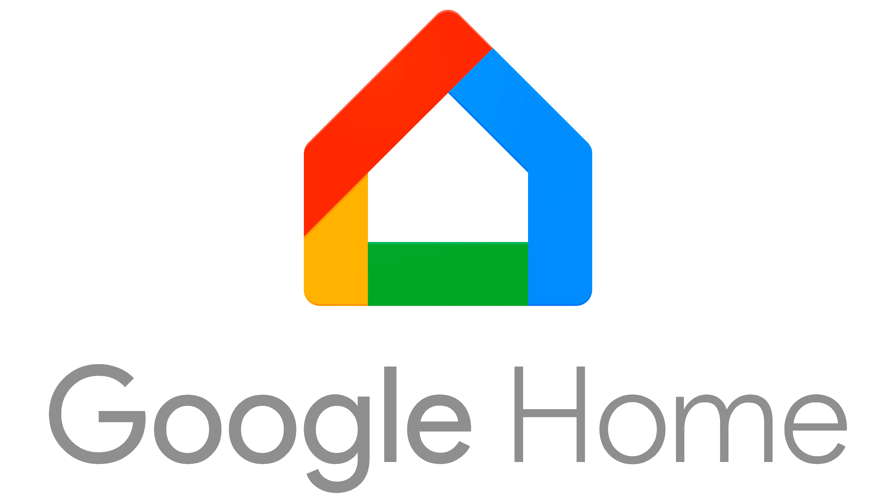
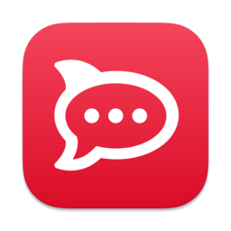
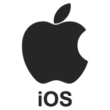
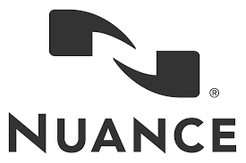

Construire un bot multicanal avec Tock
Notion de connecteur
Un connecteur Tock permet d'intégrer un bot à un canal de communication (textuel ou vocal) externe. Mis à part le type connecteur de test (utilisé en interne par l'interface Tock Studio), les connecteurs sont associés à des canaux externes à la plateforme Tock.
Tout l'intérêt des connecteurs Tock réside dans la possibilité de développer des assistants conversationnels indépendamment du ou des canaux utilisés pour lui parler. Il est ainsi possible de créer un bot pour un canal, puis le rendre multicanal par la suite en ajoutant des connecteurs.
Le connecteur Web a la particularité d'exposer une API générique pour interagir avec un bot Tock. En conséquence, il permet encore davantage d'intégrations côté "frontend", utilisant cette API comme passerelle.
Cette page liste en fait :
- Les connecteurs fournis avec la distribution Tock :







- Les kits utilisant le connecteur Web pour intégrer d'autres canaux :




Connecteurs fournis avec Tock
Tock fournit de nombreux connecteurs pour différents types de canaux (voir ci-dessous). De nouveaux connecteurs sont régulièrement ajoutés à la plateforme, en fonction des besoins projets mais aussi du calendrier d'ouverture aux bots des canaux grand public.
Exemples : arrivée de Google Home en France en 2017, Alexa en 2018, ouverture des API WhatsApp puis Business Chat en 2019, etc.
Pour en savoir plus sur les bots référencés utilisant tel ou tel connecteur en production, n'hésitez pas à consulter la page vitrine Tock.
Messenger
- Canal : Facebook Messenger
- Type : texte (+ voix via l'upload de messages vocaux)
- Status : connecteur Tock utilisé en production depuis 2016
Le guide Connecter son bot à Messenger explique comment intégrer un bot Tock avec une page Facebook / Messenger.
Pour en savoir plus sur ce connecteur, vous pouvez aussi vous rendre dans le dossier connector-messenger sur GitHub, où vous retrouverez les sources et le README du connecteur.
Slack
- Canal : Slack
- Type : texte
- Status : connecteur Tock utilisé hors production
Le guide Connecter son bot à Slackexplique comment intégrer un bot Tock avec une chaîne Slack.
Pour en savoir plus sur ce connecteur, vous pouvez aussi vous rendre dans le dossier connector-slack sur GitHub, où vous retrouverez les sources et le README du connecteur.
Google Assistant - Home
- Canal : Google Assistant / Google Home
- Type : texte + voix
- Status : connecteur Tock utilisé en production depuis 2017
Pour en savoir plus sur ce connecteur, voir ses sources et son README dans le dossier connector-ga sur GitHub.
Alexa / Echo
- Canal : Amazon Alexa / Amazon Echo
- Type : voix
- Status : connecteur Tock utilisé en production depuis 2018
Remarque importante : dans le cas d'Alexa, le modèle NLP est forcément construit et hébergé chez Amazon. Seul la partie framework conversationel de Tock peut être utilisée.
Pour en savoir plus sur ce connecteur, voir ses sources et son README dans le dossier connector-alexa sur GitHub.
Rocket.Chat
- Canal : Rocket.Chat
- Type : texte
- Status : à préciser
Pour en savoir plus sur ce connecteur, voir ses sources et son README dans le dossier connector-rocketchat sur GitHub.
- Canal : WhatsApp from Facebook
- Type : texte
- Status : connecteur Tock utilisé en production depuis 2019
Pour en savoir plus sur ce connecteur, voir ses sources et son README dans le dossier connector-whatsapp sur GitHub.
Teams
- Canal : Microsoft Teams
- Type : texte + voix
- Status : connecteur Tock utilisé en production depuis 2019
Pour en savoir plus sur ce connecteur, voir ses sources et son README dans le dossier connector-teams sur GitHub.
Business Chat
- Canal : Apple Business Chat (Messages)
- Type : texte
- Status : connecteur Tock utilisé en production depuis 2019
Pour en savoir plus sur ce connecteur, voir ses sources et son README dans le dossier connector-businesschat sur GitHub.
- Canal : Twitter (messages privés)
- Type : texte
- Status : connecteur Tock utilisé en production depuis 2019
Pour en savoir plus sur ce connecteur, voir ses sources et son README dans le dossier connector-twitter sur GitHub.
Allo-Media

- Canal : Allo-Media (téléphonie)
- Type : voix
- Status : connecteur Tock utilisé en production depuis 2020
Ce connecteur a été développé pour le bot AlloCovid. Pour en savoir plus, voir la classe AlloMediaConnector avec les sources du bot sur GitHub.
Google Chat
- Canal : Google Chat (anciennement Google Hangouts)
- Type : texte
- Status : connecteur Tock utilisé hors production
Pour en savoir plus sur ce connecteur, voir ses sources et son README dans le dossier connector-google-chat sur GitHub.
Web generique
Ce connecteur générique permet d'intégrer un bot Tock à n'importe quel site Web ou application : portail, application Web ou mobile, client REST, etc.
Le connecteur expose une API REST vers le bot, facilement intégrable depuis n'importe quelle application Web ou mobile, ou langage de programmation.
Plusieurs kits et composants basés sur le connecteur Web sont déjà disponibles pour intégrer des bots Tock à différents sites et applications, comme des sites Web avec React, des applications mobiles natives avec Flutter ou encore des intranets SharePoint.
- Canal : Web (générique pour tous sites & applications Web)
- Type : texte
- Status : connecteur Tock utilisé en production depuis 2020
Pour en savoir plus sur ce connecteur, voir ses sources et son README dans le dossier connector-web sur GitHub. Il contient exemples et documentation format Swagger de l'API REST.
Test generique
Ce connecteur est interne à Tock, il sert à dialoguer avec un bot directement dans l'interface Tock Studio (vue Test > Test the bot) en émulant d'autres connecteurs.
Integrations via le connecteur Web
Le connecteur Web expose une API générique pour interagir avec un bot Tock. En conséquence, il permet encore davantage d'intégrations côté "frontend", utilisant cette API comme passerelle.
React
Ce composant React intègre un bot Tock et en assure le rendu graphique dans une application Web.
L'application Web communique avec le bot via un connecteur Web.
- Intégration : React (JavaScript / JSX)
- Type : applications Web
- Status : utilisé en production depuis 2020
Pour en savoir plus, voir les sources et le README dans le dépôt
tock-react-kit sur GitHub.
Flutter (beta)
Ce composant Flutter intègre un bot Tock et en assure le rendu graphique dans une application mobile ou Web.
L'application communique avec le bot via un connecteur Web.
- Intégration : Flutter (Dart)
- Type : applications mobiles natives et Web
- Status : beta, en développement
Pour en savoir plus, voir les sources et le README dans le dépôt
tock-flutter-kit sur GitHub.
SharePoint (beta)
Ce composant WebPart permet d'intégrer un bot Tock dans un site SharePoint.
Il embarque le tock-react-kit pour communiquer avec le bot
via un connecteur Web et gérer le rendu graphique du bot dans la page SharePoint.
- Intégration : Microsoft SharePoint
- Type : sites Web & intranets
- Status : beta, en développement
Pour en savoir plus, voir les sources et le README dans le dépôt
tock-sharepoint sur GitHub.
Technologies vocales
Les bots Tock traitent des phrases en format texte par défaut (chatbots). Néanmoins, on peut intégrer des technologies vocales aux "bornes" du bot afin d'obtenir des conversations vocales (voicebots et callbots) :
- Traduction de la voix en texte (Speech-To-Text) en amont du traitement par le bot (ie. avant l'étape NLU)
- Traduction du texte en voix (Text-To-Speech) en aval du traitement par le bot (ie. synthèse vocale de la réponse du bot)
Certains connecteurs fournis avec Tock permettent d'intégrer un bot à un canal externe gérant les aspects vocaux STT et TTS.
En outre, d'autres technologies vocales ont pu être intégrées à Tock ces dernières années. Elles sont mentionnées à titre indicatif, même quand il n'est pas fourni de connecteur prêt à l'emploi.
Google / Android
Les fonctions Speech-To-Text et Text-To-Speech de Google sont utilisées à travers le connecteur Google Assistant / Home, également par les fonctions vocales de l'application Microsoft Teams pour Android compatible avec le connecteur Teams, ainsi qu'au sein de la plateforme Android notamment pour des développements mobiles natifs.

- Technologie : STT & TTS Google / Android
- Status : utilisé avec Tock en production (via connecteurs Google Assistant / Home, Microsoft Teams et en natif Android pour les bots intégrés on-app)
Apple / iOS
Les fonctions Speech-To-Text et Text-To-Speech d'Apple sont utilisées à travers le connecteur Business Chat, ainsi qu'au sein d'iOS pour des développements mobiles natifs.
- Technologie : STT & TTS Apple / iOS
- Status : utilisé avec Tock en production (via connecteur Business Chat et en natif iOS pour les bots intégrés on-app)
Amazon / Alexa
Les fonctions Speech-To-Text et Text-To-Speech d'Alexa (Amazon) sont utilisées à travers le connecteur Alexa / Echo.
- Technologie : STT & TTS Amazon / Alexa
- Status : utilisé avec Tock en production (via connecteur Alexa)
Allo-Media & Voxygen
La société Allo-Media propose une plateforme IA basée sur les appels téléphoniques.
Voxygen propose des services de synthèse vocale.
A l'occasion du développement du bot AlloCovid, un connecteur Allo-Media a été développé pour intégrer le bot (Tock) aux services Allo-Media : Speech-To-Text et Text-To-Speech avec Voxygen.
- Technologie : Allo-Media & Voxygen
- Status : utilisé avec Tock en production (via connecteur Allo-Media)
Nuance
Nuance propose des solutions de reconnaissance vocale & IA.
Pour des expérimentations de commande vocale en 2016, Nuance avait été intégré à Tock pour ses fonctions Speech-To-Text. Même si cette intégration n'a pas été maintenue depuis, cela fonctionnait après quelques jours de mise en place.
- Technologie : Nuance
- Status : utilisé avec Tock en 2016
Architecture de connecteurs & gouvernance des données
Dans une optique de gouvernance des modèles et données conversationnelles, l'architecture en connecteurs Tock présente plusieurs avantages :
- Le modèle est construit dans Tock, il n'est pas partagé via les connecteurs
- Le choix des connecteurs d'un bot permet de maitriser la propagation (ou non) des conversations
Par exemple, pour un bot interne à une entreprise, on peut choisir de n'utiliser que des connecteurs vers des canaux propres (site Web, etc.) ou internes à l'entreprise (applications d'entreprise, espace pro sur un téléphone Android, etc.).
- Même si un bot est connecté à plusieurs canaux/partenaires externes, seule la plateforme Tock possède l'ensemble des conversations sur tous ces canaux.
Developper son propre connecteur
Il est possible de créer son propre connecteur Tock, par exemple pour interfacer un bot Tock avec un canal propre à l'organisation (souvent un site Web ou une application mobile spécifiques), ou bien quand un canal grand public s'ouvre aux bots conversationnels et que le connecteur Tock n'existe pas encore.
La section Bot Framework du manuel développeur Tock donne des indications pour implémenter son propre connecteur.